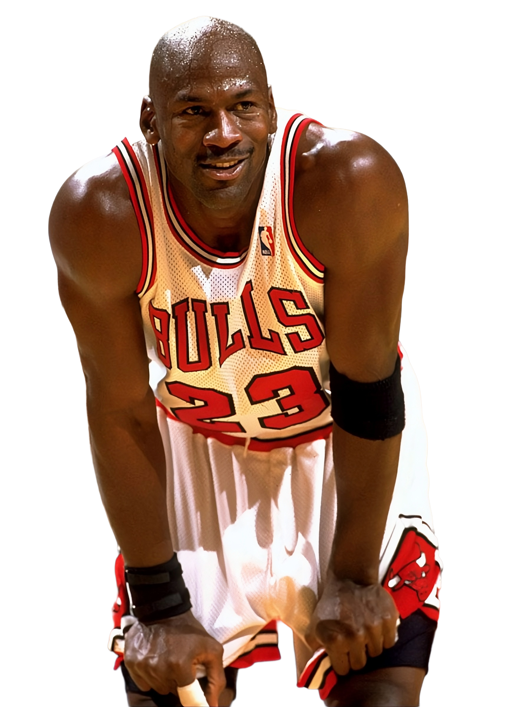

1984 — 1998
Era Jordan
Decada in care Chicago Bulls a dominat NBA-ul. Michael Jordan a redefinit ce inseamna sa fii superstar — 6 titluri, 6 Finals MVP, doi triplu-campionat consecutiv.
- 6 titluri NBA in 8 ani
- "Air Jordan" — primul brand global de incaltaminte sport
- Dream Team 1992 — Barcelona, momentul de varf
- "The Last Dance" — sezonul 97-98, ultimul cu Bulls